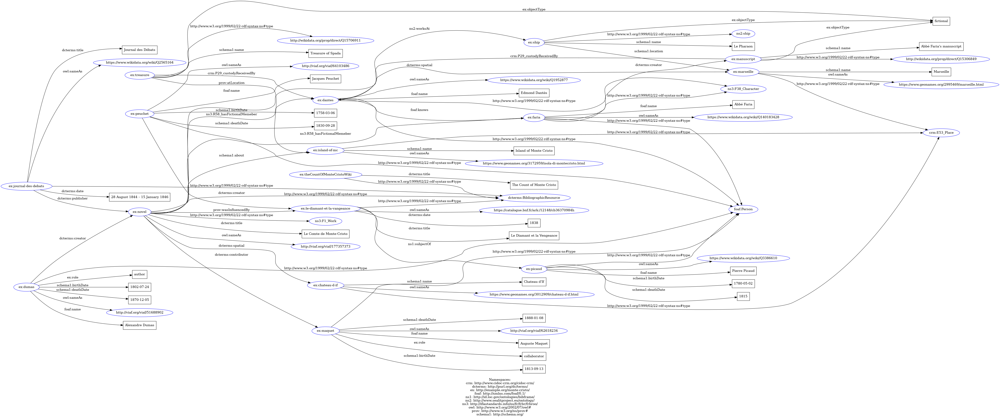

Study of the domain
Idea
MonteCristo investigates, among the others, what kind of relations can be discovered inside the content of the novel itself, the context around its publication and the connections with real people and places.
Since the goal is to create a Linked Open Data project, it provides a structured dataset, that would be semantically correct, thanks to the knowledge organization and knowledge representation process.
The starting point of MonteCristo is the Wikipedia page dedicated to the novel (The Count of Monte Cristo):
fifteen entities (including the book itself) have been chosen within the Wikipedia page as the most representative for our purpose.
Entities
The entities are divided into five categories, recalled by the badges above them: real persons, fictional characters, objects, bibliographic resources, and places. Apart from the objects, all the entities are coupled with their own Authority source. For the real persons it is VIAF; for the fictional characters it is Wikidata; for the bibliographic resources they are the National Library of France and Wikidata; for the places it is Geonames. Since the objects are fictional, there is no correspondence on an authoritative catalogue. For this reason, the space that is dedicated to the link in the other entities is intentionally left blank.
Persons (Real)
Alexandre Dumas
Author of The Count of Monte Cristo
Auguste Maquet
Collaborator of The Count of Monte Cristo
Jacques Peuchet
Author of Le Diamant et la Vengeance
Pierre Picaud
Protagonist of Le Diamant et la Vengeance
Fictional Characters
Edmond Dantès
Protagonist of The Count of Monte Cristo
Abbé Faria
Character of The Count of Monte Cristo
Objects
Le Pharaon
Object of The Count of Monte Cristo
Treasure of Spada
Object of The Count of Monte Cristo
Abbé Faria's manuscript
Object of The Count of Monte Cristo
Bibliographic Entities
The Count of Monte Cristo
Novel written by Alexandre Dumas
Le Diamant et la Vengeance
Inspiration for The Count of Monte Cristo
Journal des Débats
Publisher of The Count of Monte Cristo
Places
Château d'If
Place of The Count of Monte Cristo
Marseille
Place of The Count of Monte Cristo
Island of Monte Cristo
Place of The Count of Monte Cristo
Knowledge Organization
Theoretical Model
The next step was to create a model in natural language, for a schematic representation of what unites the selected entities, including also the authority sources.
However, the theoretical model does not include any ontology terms, RDF properties or technicisms yet: the purpose of this is to offer a rudimentary visual explanation of the complex connections that will be defined later in a more sophisticated way.
Even at a first glance, three identifying colors can be noted in the graph: yellow for the entities, light blue for the type of the entities, violet for the authority source link. The model has been implemented with yEd Graph Editor and its layout was done automatically in hierarchy.
Conceptual Model
After the theoretical model, it was time to finally develop a conceptual model using existing ontologies. This is necessary to formalize the theoretical model represented above.
Once again, the graph was implemented with yEd Graph Editor, supported by the Graffoo palette by S. Peroni.
The ontologies used are:
- Friend of a Friend (FOAF): it describes persons, their activities and relations to objects.
Classes:Person,Agent
Property:knows - FRBR object oriented (FRBRoo): it captures and represents the underlying semantics of bibliographic information.
Classes:F1_Work,F38_Character
Property:R58_hasFictionalMember - CIDOC Conceptual Reference Model (CIDOC-CRM): it provides a formal structure for implicit and explicit concepts and relationships in cultural heritage domain.
Classes:E28_ConceptualObject,E53_Place
Property:P29_custodyReceivedBy - Dublin Core Terms (DCTerms): starting from the Dublin Core Metadata Element Set, it adds properties and classes for describing many heritage and archival concepts.
Class:BibliographicResource
Properties:contributor,creator,publisher,spatial - Wikidata: a free, open, multilingual, and collaborative knowledge base that stores structured data for humans and machines.
Classes:Q15306849(fictional creative work),Q15706911(fictional object) - SeaLit Ontology: an ontology for a formal structure of the ships in literary works, including places, voyage concepts and employments.
Class:Ship
Property:worksAt - Schema.org: it is advocated by the major search engines on the Internet and it covers about anything.
Class:CreativeWork
Properties:about,location - PROV Ontology (PROV-O): it represents and interchanges provenance information.
Properties:atLocation,wasInfluencedBy - BibFrame: useful for describing the context around a literary work.
Property:subjectOf - RDF Schema: a data-modelling vocabulary for RDF data. It describes groups of related resources and the relationships between these resources.
Class:Resource
Property:subClassOf - Ontology Web Language (OWL): a standard endorsed by the W3C Semantic Web Standards. It defines and shares machine-interpretable domain ontologies.
Property:sameAs
Knowledge Representation
XML/TEI
To continue with the Knowledge Representation tasks within the project, an XML/TEI file was created based on "The Count of Monte Cristo" Wikipedia page, already used as the source for the entities.
There are sampled the following sections: Introduction, Plot,
Background to elements of the plot, Publication (just the introduction),
and Historical background.
Since the other sections do not mention the chosen entities and they would have unnecessarily lengthened the discussion, it was decided not to encode them. These omissions are well-defined within the gap reason="sampling" element, declared in the editorial declaration.
The fifteen entities are linked to their authority sources through the @sameAs attribute. For the same reason mentioned above, the fictional objects do not have authority sources.
All the semantic relations are recorded in a specific <listRelation>. Each relation has three attributes: @name, the predicate; @active, the subject; and @passive, the object. This will be useful when creating, with a Python script, the transformation from TEI to RDF.
Below there is an example of the followed pattern:
<person xml:id="dumas" sameAs="http://viaf.org/viaf/51688902" role="author">
<persName xml:lang="fr">Alexandre Dumas</persName>
<birth>1802-07-24</birth>
<death>1870-12-05</death>
</person>
...
<relation name="dcterms:creator" active="#dumas" passive="#novel">XML to HTML
The XML/TEI file created was then transformed into an HTML page using XSLT first, and a Python script later. The XSLT manages the style and how the elements of the XML file will be treated in HTML elements.
A script in Python is necessary in order to actually do the transformation: using the lxml library the XML/TEI file and the XSLT file are considered and combined, so to create an HTML page automatically.
Below there are the links to view the XSLT file and the Python script on the GitHub repository of the project. Therefore, a link to the output HTML page is provided.
XML/TEI to RDF
As a final step, an RDF dataset was created. Once again, a Python script was used to transform the XML/TEI file (the source for the dataset itself) into RDF triples. In this case the format of the output file is Turtle (.ttl).
The library used has been rdflib, crucial for generating the triples.
Beyond that, the visual representation of the Turtle file was done using the free web service RDF Grapher, which parses RDF data and visualizes it as a graph.

Conclusion
A Linked Open Data resource has been developed to show the user how it works and which technologies can be employed in accordance with international standards, by linking the selected entities. After defining the entity types and identifying their authoritative sources, the theoretical model revealed the connections between them. Thanks to the conceptual model, the relationships have been transformed into relationships between classes linked by properties, making use of existing ontologies from the web that are relevant to the domain. The entire final section on knowledge representation is necessary to explain how a text is annotated and transformed into a machine-readable language, using stylesheets to make it more readable. Finally, the data was structured in RDF format —one of the fundamental pillars of the Semantic Web— to express information through triples. An example of its application is the resulting knowledge graph, which a software or a search engine can navigate and interpret logically.
Technologies
- yEd Graph Editor: implementation of the theoretical model and the conceptual model.
- Graffoo: palette for yEd Graph Editor implemented by Professor Silvio Peroni.
- RDF Grapher: visualization of the Turtle file.
References
- Wikipedia page of The Count of Monte Cristo: source for the project.
- Wikimedia Commons item: source page of the image used as favicon and background.